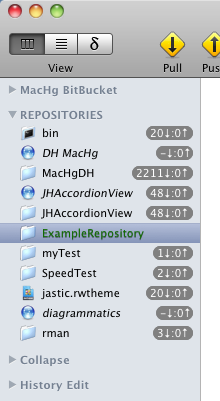

An empty Mercurial repository is one where there have been no commits in the repository. (The repository has only been initialized.)
In a MacHg Document, the the list of repositories in the left sidebar is always visible and contains a list of repository references. Any empty repositories in this list act like "stem-cell" repositories. That is, since there have been no commits in the repository then the repository has not yet "taken on an identity". The first commit into such an empty repository will "fix" the nature of the repository.
Below is an example screenshot of a document showing an empty repository called "ExampleRepository". One can see that this empty repository is "related" to all the other repositories. It can pull changes from any repository.

Empty repositories appear with a green name to distinguish their special nature.